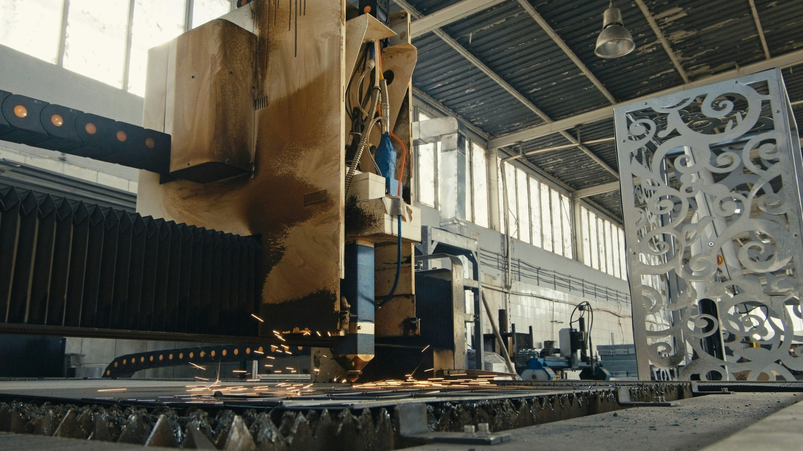

Visuals and Interactive Components
This section includes an image and a video for clearer understanding. Visual media helps explain equipment layout, weld behavior, and real-world process use (TWI, n.d.).

Short Learning Activity
Question: Why is laser welding popular in mass production?
A common reason is fast welding speed combined with consistent quality under automated control.
Question: What is one major challenge?
Initial equipment cost and strict setup requirements can be significant.
Video Example
If the embedded player shows an error, open the video directly on YouTube: Watch video
Video citation example: (The Weld Nugget, 2024). Full reference appears on the References page.
Additional Video Example
If the embedded player shows an error, open the video directly on YouTube: Watch video
Video citation example: (Baker's Gas, 2025). Full reference appears on the References page.